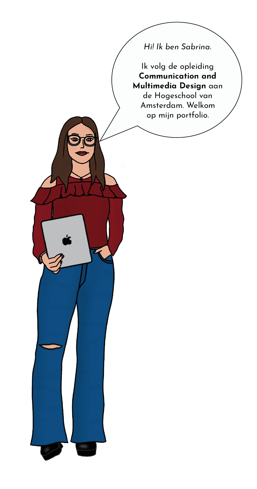
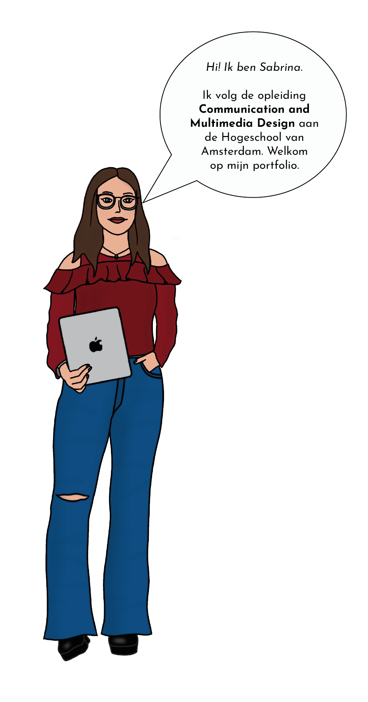
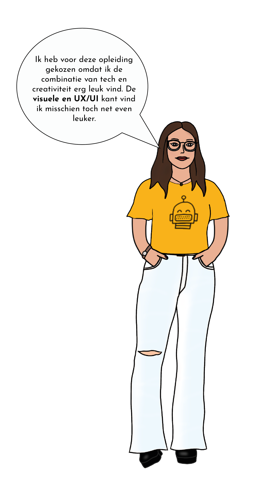
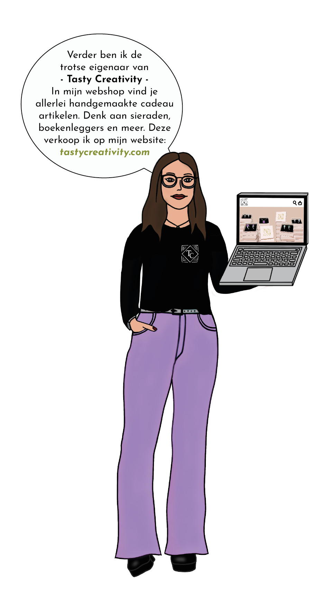
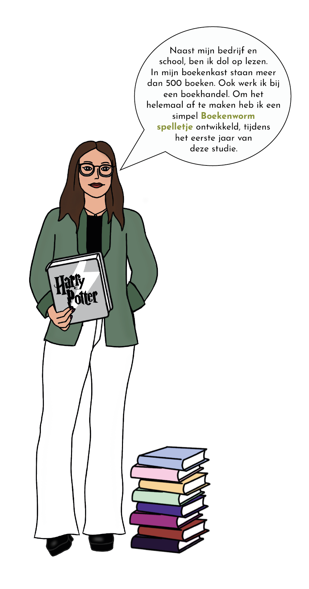
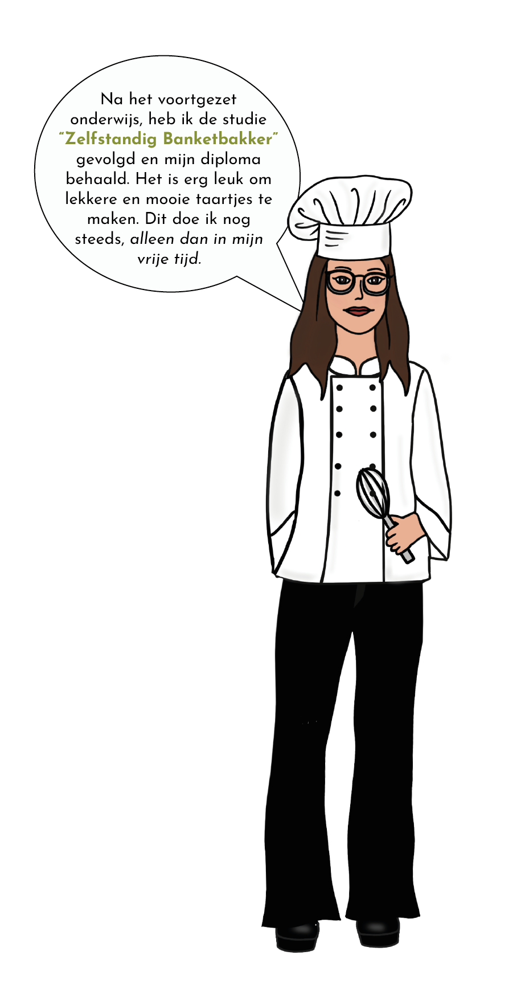
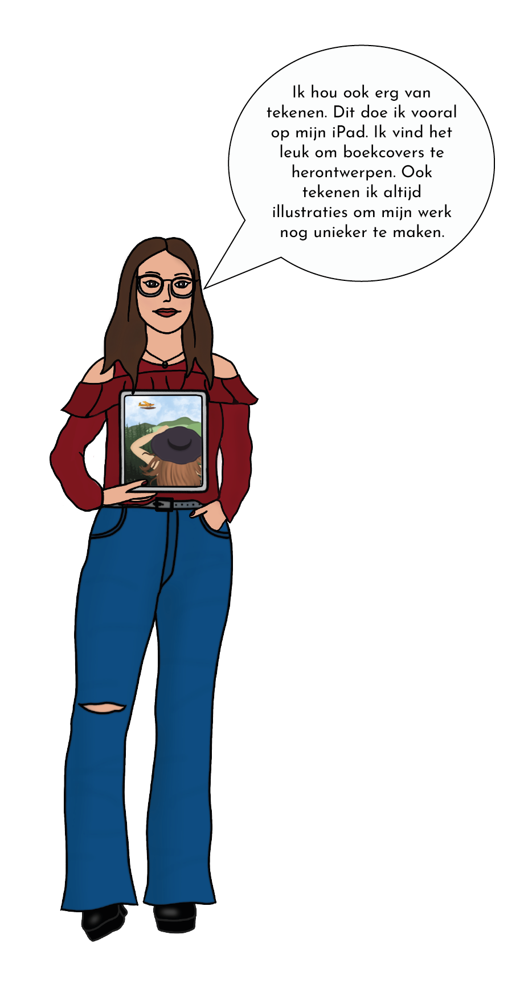

Hi! Ik ben Sabrina. Ik volg de opleiding Communication and Multimedia Design aan de Hogeschool van Amsterdam. Welkom op mijn portfolio.

 


Ik heb voor deze opleiding gekozen omdat ik de combinatie van tech en creativiteit erg leuk vind. De visuele en UX/UI kant vind ik misschien toch net even leuker.
Bekijk projecten


Verder ben ik de trotse eigenaar van Tasty Creativity. In mijn webshop vind je allerlei handgemaakte cadeau artikelen. Denk aan sieraden, boekenleggers en meer. Deze verkoop ik op mijn website: tastycreativity.com


Naast mijn bedrijf en school, ben ik dol op lezen. In mijn boekenkast staan meer dan 500 boeken. Ook werk ik bij een boekhandel. Om het helemaal af te maken heb ik een simpel Boekenworm spelletje ontwikkeld, tijdens het eerste jaar van deze studie.


Na het voortgezet onderwijs, heb ik de opleiding “Zelfstandig Banketbakker” gevolgd en mijn diploma behaald. Het is erg leuk om lekkere en mooie taartjes te maken. Dit doe ik nog steeds, alleen dan in mijn vrije tijd.


Mijn creativiteit gebruik ik ook tijdens het tekenen. Tekenen doe ik vooral op mijn iPad. Om mijn werk unieker te maken, vul ik dit aan met zelfgemaakte illustraties.
